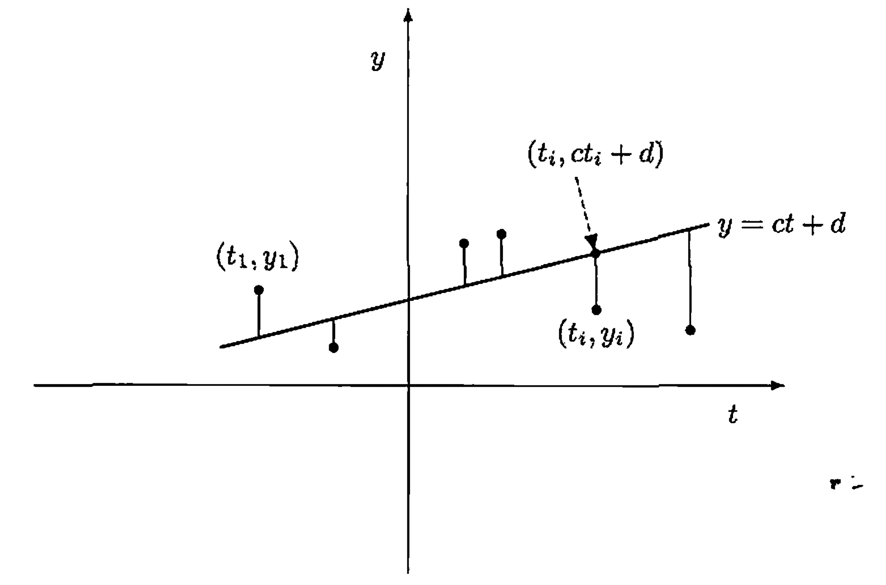

§ 29. The Adjoint of a Linear Operator¶
We assume that all vector spaces are over the field \(F\), where \(F\) denotes either \(\mathbb{R}\) or \(\mathbb{C}\).
For a linear operator \(T\) on an inner product space \(V\), we now define a related linear operator on \(V\) called the adjoint of \(T\), whose matrix representation with respect to any orthonormal basis \(\beta\) for \(V\) is \([T]_{\beta}^{*}\). The analogy between conjugation of complex numbers and adjoints of linear operators will become apparent.
The Adjoint of a Linear Operator¶
Theorem 29.1 : Representation of linear functionals by inner products
Let \(V\) be a finite-dimensional inner product space over \(F\), and let \(g: V \rightarrow F\) be a linear transformation. Then there exists a unique vector \(y \in V\) such that \(g(x)=\langle x, y\rangle\) for all \(x \in V\).
Proof
Let \(\beta=\left\{v_{1}, v_{2}, \ldots, v_{n}\right\}\) be an orthonormal basis for \(V\), and let
Define \(h: V \rightarrow F\) by \(h(x)=\langle x, y\rangle\), which is clearly linear. Furthermore, for \(1 \leq j \leq n\) we have
Since \(g\) and \(h\) both agree on \(\beta\), we have \(g=h\) by the corollary to Theorem 2.6.
To show that \(y\) is unique, suppose that \(g(x)=\left\langle x, y^{\prime}\right\rangle\) for all \(x\). Then \(\langle x, y\rangle=\left\langle x, y^{\prime}\right\rangle\) for all \(x\). So by Theorem 27.10(e), we have \(y=y^{\prime}\).
Theorem 29.2 : Existence and uniqueness of adjoint
Let \(V\) be a finite-dimensional inner product space, and let \(T\) be a linear operator on \(V\). Then there exists a unique function \(T^{*}: V \rightarrow V\) such that \(\langle T(x), y\rangle=\left\langle x, T^{*}(y)\right\rangle\) for all \(x, y \in V\). Furthermore, \(T^{*}\) is linear.
Proof
Let \(y \in V\). Define \(g: V \rightarrow F\) by \(g(x)=\langle T(x), y\rangle\) for all \(x \in V\). We first show that \(g\) is linear. Let \(x_{1}, x_{2} \in V\) and \(c \in F\). Then
Hence \(g\) is linear. We now apply Theorem 29.1 to obtain a unique vector \(y^{\prime} \in V\) such that \(g(x)=\left\langle x, y^{\prime}\right\rangle\). That is, \(\langle T(x), y\rangle=\left\langle x, y^{\prime}\right\rangle\) for all \(x \in V\). Define \(T^{*}: V \rightarrow V\) by \(T^{*}(y)=y^{\prime}\). Then \(\langle T(x), y\rangle=\left\langle x, T^{*}(y)\right\rangle\).
To show that \(T^{*}\) is linear, let \(y_{1}, y_{2} \in V\) and \(c \in F\). For any \(x \in V\), we have
Since \(x\) is arbitrary, \(T^{*}\left(c y_{1}+y_{2}\right)=c T^{*}\left(y_{1}\right)+T^{*}\left(y_{2}\right)\) by Theorem 27.10(e).
Finally, we show uniqueness. Suppose that \(U: V \rightarrow V\) is linear and satisfies \(\langle T(x), y\rangle=\langle x, U(y)\rangle\) for all \(x, y \in V\). Then \(\left\langle x, T^{*}(y)\right\rangle=\langle x, U(y)\rangle\) for all \(x, y \in V\). So \(T^{*}=U\) by Theorem 27.10(e).
Definition 29.3 : Adjoint
The linear operator \(T^{*}\) described in Theorem 29.2 is called the adjoint of the operator \(T\). The symbol \(T^{*}\) is read "\(T\) star."
Concept 29.4 : Symbolic meaning of adjoint
\(T^{*}\) is the unique operator on \(V\) satisfying \(\langle T(x), y\rangle=\left\langle x, T^{*}(y)\right\rangle\) for all \(x, y \in V\). Note that we also have
So \(\langle x, T(y)\rangle=\left\langle T^{*}(x), y\right\rangle\) for all \(x, y \in V\).
We may view these equations symbolically as adding a \(*\) to \(T\) when shifting its position inside the inner product.
Concept 29.5 : Adjoint in infinite-dimensional spaces
For an infinite-dimensional inner product space, the adjoint of a linear operator \(T\) may be defined to be the function \(T^{*}\) such that \(\langle T(x), y\rangle=\left\langle x, T^{*}(y)\right\rangle\) for all \(x, y \in V\), provided it exists. Although the uniqueness and linearity of \(T^{*}\) follow as before, the existence of the adjoint is not guaranteed. The reader should observe the necessity of the finite-dimensional hypothesis in the proof of Theorem 29.1.
Many theorems about adjoints do not depend on \(V\) being finite-dimensional. Thus, unless stated otherwise, for the remainder of this chapter we adopt the convention that a reference to the adjoint of a linear operator on an infinite-dimensional inner product space assumes its existence.
Theorem 29.6 : Matrix of the adjoint in an orthonormal basis
Let \(V\) be a finite-dimensional inner product space, and let \(\beta\) be an orthonormal basis for \(V\). If \(T\) is a linear operator on \(V\), then
Proof
Let \(A=[T]_{\beta}\), \(B=\left[T^{*}\right]_{\beta}\), and \(\beta=\left\{v_{1}, v_{2}, \ldots, v_{n}\right\}\). Then from Corollary 28.10, we have
Hence \(B=A^{*}\).
Corollary 29.7 : Adjoint of \(L_A\)
Let \(A\) be an \(n \times n\) matrix. Then \(L_{A^{*}}=\left(L_{A}\right)^{*}\).
Proof
If \(\beta\) is the standard ordered basis for \(F^{n}\), then by Theorem 10.16(a), we have \(\left[L_{A}\right]_{\beta}=A\). Hence
So \(\left(L_{A}\right)^{*}=L_{A^{*}}\).
Example 29.8 : Computing an adjoint on \(\mathbb{C}^{2}\)
Let \(T\) be the linear operator on \(\mathbb{C}^{2}\) defined by \(T\left(a_{1}, a_{2}\right)=\left(2 i a_{1}+3 a_{2}, a_{1}-a_{2}\right)\). If \(\beta\) is the standard ordered basis for \(\mathbb{C}^{2}\), then
So
Hence
Theorem 29.9 : Algebraic properties of adjoints
Let \(V\) be an inner product space, and let \(T\) and \(U\) be linear operators on \(V\). Then
- (a) \((T+U)^{*}=T^{*}+U^{*}\).
- (b) \((c T)^{*}=\overline{c}\, T^{*}\) for any \(c \in F\).
- (c) \((T U)^{*}=U^{*} T^{*}\).
- (d) \(T^{* *}=T\).
- (e) \(I^{*}=I\).
Proof
Let \(x, y \in V\).
-
(a)
We show that \(T^{*}+U^{*}\) satisfies the defining property of \((T+U)^{*}\). Using linearity of \(T+U\) and linearity of the inner product in the first variable,\[ \begin{aligned} \left\langle (T+U)(x), y\right\rangle & =\langle T(x)+U(x), y\rangle \\ & =\langle T(x), y\rangle+\langle U(x), y\rangle \\ & =\left\langle x, T^{*}(y)\right\rangle+\left\langle x, U^{*}(y)\right\rangle \\ & =\left\langle x,\, T^{*}(y)+U^{*}(y)\right\rangle \\ & =\left\langle x,\,(T^{*}+U^{*})(y)\right\rangle . \end{aligned} \]Hence \(T^{*}+U^{*}\) has the defining property of the adjoint of \(T+U\). By uniqueness of adjoints, \((T+U)^{*}=T^{*}+U^{*}\).
-
(b)
We show that \(\overline{c}\,T^{*}\) satisfies the defining property of \((cT)^{*}\). Using linearity of \(T\) and conjugate-linearity in the second variable,\[ \begin{aligned} \langle (cT)(x), y\rangle & =\langle c\,T(x), y\rangle =c\,\langle T(x), y\rangle \\ & =c\,\langle x, T^{*}(y)\rangle =\langle x, \overline{c}\,T^{*}(y)\rangle =\left\langle x, (\overline{c}\,T^{*})(y)\right\rangle . \end{aligned} \]Therefore, by uniqueness of adjoints, \((cT)^{*}=\overline{c}\,T^{*}\).
-
(c)
We show that \(U^{*}T^{*}\) satisfies the defining property of \((TU)^{*}\). Using the defining property of adjoints twice,\[ \begin{aligned} \langle (TU)(x), y\rangle & =\langle T(U(x)), y\rangle =\langle U(x), T^{*}(y)\rangle \\ & =\left\langle x, U^{*}(T^{*}(y))\right\rangle =\left\langle x, (U^{*}T^{*})(y)\right\rangle . \end{aligned} \]Hence, by uniqueness of adjoints, \((TU)^{*}=U^{*}T^{*}\).
-
(d)
We show that \(T\) satisfies the defining property of \((T^{*})^{*}\). Using the defining property of \(T^{*}\),\[ \langle T(x), y\rangle=\langle x, T^{*}(y)\rangle . \]Now apply the defining property of \((T^{*})^{*}\) to the operator \(T^{*}\) (with \(x\) and \(y\) swapped):
\[ \langle x, T^{*}(y)\rangle=\left\langle (T^{*})^{*}(x), y\right\rangle . \]Combining these equalities gives
\[ \langle T(x), y\rangle=\left\langle (T^{*})^{*}(x), y\right\rangle \]for all \(x, y \in V\). Hence \(T(x)=(T^{*})^{*}(x)\) for all \(x\), so \(T^{**}=T\).
-
(e)
We show that \(I\) satisfies the defining property of \(I^{*}\). For all \(x, y \in V\),\[ \langle I(x), y\rangle=\langle x, y\rangle=\langle x, I(y)\rangle . \]Thus \(I\) has the defining property of the adjoint of \(I\). By uniqueness of adjoints, \(I^{*}=I\).
Corollary 29.10 : Conjugate-transpose identities
Let \(A\) and \(B\) be \(n \times n\) matrices. Then
- (a) \((A+B)^{*}=A^{*}+B^{*}\).
- (b) \((c A)^{*}=\overline{c} A^{*}\) for all \(c \in F\).
- (c) \((A B)^{*}=B^{*} A^{*}\).
- (d) \(A^{* *}=A\).
- (e) \(I^{*}=I\).
Proof
View matrices as linear operators on \(F^{n}\) via left multiplication. For any \(n \times n\) matrix \(M\), the adjoint of \(L_{M}\) is \(L_{M^{*}}\), because for all \(x, y \in F^{n}\),
Therefore \((L_{M})^{*}=L_{M^{*}}\).
Now apply Theorem 29.9 to the operators \(L_{A}\) and \(L_{B}\):
-
(a)
\[ L_{(A+B)^{*}}=(L_{A+B})^{*}=(L_{A}+L_{B})^{*}=(L_{A})^{*}+(L_{B})^{*}=L_{A^{*}}+L_{B^{*}}=L_{A^{*}+B^{*}} . \]Hence \((A+B)^{*}=A^{*}+B^{*}\).
-
(b)
\[ L_{(cA)^{*}}=(L_{cA})^{*}=(cL_{A})^{*}=\overline{c}\,(L_{A})^{*}=\overline{c}\,L_{A^{*}}=L_{\overline{c}\,A^{*}} . \]Hence \((cA)^{*}=\overline{c}\,A^{*}\).
-
(c)
\[ L_{(AB)^{*}}=(L_{AB})^{*}=(L_{A}L_{B})^{*}=(L_{B})^{*}(L_{A})^{*}=L_{B^{*}}L_{A^{*}}=L_{B^{*}A^{*}} . \]Hence \((AB)^{*}=B^{*}A^{*}\).
-
(d)
\[ L_{A^{**}}=(L_{A^{*}})^{*}=\big((L_{A})^{*}\big)^{*}=L_{A} \]by Theorem 29.9(d). Hence \(A^{**}=A\).
-
(e)
Since \(L_{I}=I\) on \(F^{n}\), Theorem 29.9(e) gives \((L_{I})^{*}=L_{I}\). Thus \(L_{I^{*}}=L_{I}\), and hence \(I^{*}=I\).
Least Squares Approximation¶
Definition 29.11 : Least squares approximation problem
Consider the following problem. An experimenter collects data by taking measurements \(y_{1}, y_{2}, \ldots, y_{m}\) at times \(t_{1}, t_{2}, \ldots, t_{m}\), respectively. For example, he or she may be measuring unemployment at various times during some period. Suppose that the data \(\left(t_{1}, y_{1}\right),\left(t_{2}, y_{2}\right), \ldots,\left(t_{m}, y_{m}\right)\) are plotted as points in the plane. From this plot, the experimenter feels that there exists an essentially linear relationship between \(y\) and \(t\), say \(y=c t+d\), and would like to find the constants \(c\) and \(d\) so that the line \(y=c t+d\) represents the best possible fit to the data collected. One such estimate of fit is to calculate the error \(E\) that represents the sum of the squares of the vertical distances from the points to the line, that is,

Figure 29.1.
Thus the problem is reduced to finding the constants \(c\) and \(d\) that minimize \(E\). (This problem is called least squares approximation, and the line \(y=c t+d\) is called the least-squares line.)
If we let
then it follows that \(E=\|y-A x\|^{2}\).
We develop a general method for finding an explicit vector \(x_{0} \in F^{n}\) that minimizes \(E\) in Theorem 29.15. That is, given an \(m \times n\) matrix \(A\), we find \(x_{0} \in F^{n}\) such that \(\left\|y-A x_{0}\right\| \leq\|y-A x\|\) for all vectors \(x \in F^{n}\). This method not only allows us to find the linear function that best fits the data, but also, for any positive integer \(k\), the best fit using a polynomial of degree at most \(k\).
For \(x, y \in F^{n}\), let \(\langle x, y\rangle_{n}\) denote the standard inner product of \(x\) and \(y\) in \(F^{n}\). Recall that if \(x\) and \(y\) are regarded as column vectors, then \(\langle x, y\rangle_{n}=y^{*} x\).
Lemma 29.12
Let \(A \in \mathrm{M}_{m \times n}(F)\), \(x \in F^{n}\), and \(y \in F^{m}\). Then
Proof
By a generalization of the corollary to Theorem 29.9, we have
Lemma 29.13
Let \(A \in \mathrm{M}_{m \times n}(F)\). Then \(\operatorname{rank}\left(A^{*} A\right)=\operatorname{rank}(A)\).
Proof
By the dimension theorem, we need only show that, for \(x \in F^{n}\), we have \(A^{*} A x=0\) if and only if \(A x=0\). Clearly, \(A x=0\) implies that \(A^{*} A x=0\). So assume that \(A^{*} A x=0\). Then
so \(A x=0\).
Corollary 29.14
If \(A\) is an \(m \times n\) matrix such that \(\operatorname{rank}(A)=n\), then \(A^{*} A\) is invertible.
Theorem 29.15 : Least squares approximation
Let \(A \in \mathrm{M}_{m \times n}(F)\) and \(y \in F^{m}\). Then there exists \(x_{0} \in F^{n}\) such that \(\left(A^{*} A\right) x_{0}=A^{*} y\) and \(\left\|A x_{0}-y\right\| \leq\|A x-y\|\) for all \(x \in F^{n}\). Furthermore, if \(\operatorname{rank}(A)=n\), then \(x_{0}=\left(A^{*} A\right)^{-1} A^{*} y\).
Proof
Let \(A\) be an \(m \times n\) matrix and \(y \in F^{m}\). Define \(W=\left\{A x: x \in F^{n}\right\}\). That is, \(W=R\left(L_{A}\right)\). By Corollary 28.18, there exists a unique vector in \(W\) that is closest to \(y\). Call this vector \(A x_{0}\), where \(x_{0} \in F^{n}\). Then \(\left\|A x_{0}-y\right\| \leq\|A x-y\|\) for all \(x \in F^{n}\).
To develop a practical method for finding such an \(x_{0}\), we note from Theorem 28.17 and Corollary 28.18 that \(A x_{0}-y \in W^{\perp}\), so \(\langle A x, A x_{0}-y\rangle_{m}=0\) for all \(x \in F^{n}\). Thus, by Lemma 29.12, we have
for all \(x \in F^{n}\). That is, \(A^{*}\left(A x_{0}-y\right)=0\). So we need only find a solution \(x_{0}\) to \(A^{*} A x=A^{*} y\). If, in addition, we assume that \(\operatorname{rank}(A)=n\), then by Lemma 29.13 we have \(x_{0}=\left(A^{*} A\right)^{-1} A^{*} y\).
Example 29.16 : Computation of least squares approximation
To return to our experimenter, let us suppose that the data collected are \((1,2)\), \((2,3)\), \((3,5)\), and \((4,7)\). Then
hence
Thus
Therefore
It follows that the line \(y=1.7 t\) is the least-squares line. The error \(E\) may be computed directly as \(\left\|A x_{0}-y\right\|^{2}=0.3\).
Suppose that the experimenter chose the times \(t_{i}\) (\(1 \leq i \leq m\)) to satisfy
Then the two columns of \(A\) would be orthogonal, so \(A^{*} A\) would be a diagonal matrix (see Exercise 19). In this case, the computations are greatly simplified.
In practice, the \(m \times 2\) matrix \(A\) in this least-squares application has rank equal to two, and hence \(A^{*} A\) is invertible by Corollary 29.14. For otherwise, the first column of \(A\) is a multiple of the second column, which consists only of ones. But this would occur only if the experimenter collects all the data at exactly one time.
Concept 29.17 : Polynomial least squares approximation
Finally, the method above may also be applied if, for some \(k\), the experimenter wants to fit a polynomial of degree at most \(k\) to the data. For instance, if a polynomial \(y=c t^{2}+d t+e\) of degree at most \(2\) is desired, the appropriate model is
Minimal Solutions to Systems of Linear Equations¶
Definition 29.18 : Minimal solutions to systems of linear equations
Even when a system of linear equations \(A x=b\) is consistent, there may be no unique solution. In such cases, it may be desirable to find a solution of minimal norm. A solution \(s\) to \(A x=b\) is called a minimal solution if \(\|s\| \leq\|u\|\) for all other solutions \(u\).
Theorem 29.19 : Unique minimal solution for a consistent system
Let \(A \in \mathrm{M}_{m \times n}(F)\) and \(b \in F^{m}\). Suppose that \(A x=b\) is consistent. Then the following statements are true.
- (a) There exists exactly one minimal solution \(s\) of \(A x=b\), and \(s \in R\left(L_{A^{*}}\right)\).
- (b) The vector \(s\) is the only solution to \(A x=b\) that lies in \(R\left(L_{A^{*}}\right)\). That is, if \(u\) satisfies \(\left(A A^{*}\right) u=b\), then \(s=A^{*} u\).
Proof
For simplicity of notation, let \(W=R\left(L_{A^{*}}\right)\) and \(W^{\prime}=N\left(L_{A}\right)\).
We claim that \(W^{\perp}=W^{\prime}\). To prove this, let \(x \in F^{n}\).
First suppose that \(x \in W^{\perp}\). Then \(\langle x, z\rangle=0\) for all \(z \in W\). In particular, for every \(y \in F^{m}\) we have \(A^{*}y \in W\), so
Since this holds for all \(y \in F^{m}\), it follows that \(Ax=0\), so \(x \in N(L_{A})=W^{\prime}\).
Conversely, suppose that \(x \in W^{\prime}=N(L_{A})\). Then \(Ax=0\). For any \(z \in W\) there exists \(y \in F^{m}\) such that \(z=A^{*}y\), and hence
Thus \(x\) is orthogonal to every vector in \(W\), so \(x \in W^{\perp}\).
This proves \(W^{\perp}=W^{\prime}\).
Now, let \(x\) be any solution to \(A x=b\). By Theorem 28.17, \(x=s+y\) for some \(s \in W\) and \(y \in W^{\perp}\). But \(W^{\perp}=W^{\prime}\), and therefore \(b=A x=A s+A y=A s\). So \(s\) is a solution to \(A x=b\) that lies in \(W\).
-
To prove (a), we need only show that \(s\) is the unique minimal solution. Let \(v\) be any solution to \(A x=b\). By Theorem 3.9, we have \(v=s+u\), where \(u \in W^{\prime}\). Since \(s \in W\), which equals \(W^{\prime\perp}\), we have
\[ \|v\|^{2}=\|s+u\|^{2}=\|s\|^{2}+\|u\|^{2} \geq\|s\|^{2} \]by Exercise 27.10. Thus \(s\) is a minimal solution. We can also see from the preceding calculation that if \(\|v\|=\|s\|\), then \(u=0\). Hence \(v=s\). Therefore \(s\) is the unique minimal solution to \(A x=b\), proving (a).
-
For (b), assume that \(v\) is also a solution to \(A x=b\) that lies in \(W\). Then
\[ v-s \in W \cap W^{\prime}=W \cap W^{\perp}=\{0\}, \]so \(v=s\). Finally, suppose that \(\left(A A^{*}\right) u=b\), and let \(v=A^{*} u\). Then \(v \in W\) and \(A v=b\). Therefore \(s=v=A^{*} u\) by the discussion above.
Example 29.20 : Minimal solution of a system
Consider the system
Let
To find the minimal solution to this system, we must first find some solution \(u\) to \(A A^{*} x=b\). Now
so we consider the system
One solution is
(Any solution will suffice.) Hence
is the minimal solution to the given system.
Exercise¶
Exercise 29.8
Let \(V\) be a finite-dimensional inner product space, and let \(T\) be a linear operator on \(V\). Prove that if \(T\) is invertible, then \(T^{*}\) is invertible and \(\left(T^{*}\right)^{-1}=\left(T^{-1}\right)^{*}\).
Exercise 29.9
Prove that if \(V=W \oplus W^{\perp}\) and \(T\) is the projection on \(W\) along \(W^{\perp}\), then \(T=T^{*}\).
Hint: Recall that \(N(T)=W^{\perp}\). (For definitions, see the exercises of Section 3 and Section 8.)
Exercise 29.10
Let \(T\) be a linear operator on an inner product space \(V\). Prove that \(\|T(x)\|=\|x\|\) for all \(x \in V\) if and only if \(\langle T(x), T(y)\rangle=\langle x, y\rangle\) for all \(x, y \in V\).
Hint: Use Exercise 27.20.
Exercise 29.11
For a linear operator \(T\) on an inner product space \(V\), prove that \(T^{*} T=T_{0}\) implies \(T=T_{0}\). Is the same result true if we assume that \(T^{*}=T_{0}\)?
Exercise 29.12
Let \(V\) be an inner product space, and let \(T\) be a linear operator on \(V\). Prove the following results.
- (a) \(R\left(T^{*}\right)^{\perp}=N(T)\).
-
(b) If \(V\) is finite-dimensional, then \(R\left(T^{*}\right)=N(T)^{\perp}\).
Hint: Use Exercise 28.13(c).
Exercise 29.13
Let \(T\) be a linear operator on a finite-dimensional inner product space \(V\). Prove the following results.
- (a) \(N\left(T^{*} T\right)=N(T)\). Deduce that \(\operatorname{rank}\left(T^{*} T\right)=\operatorname{rank}(T)\).
- (b) \(\operatorname{rank}(T)=\operatorname{rank}\left(T^{*}\right)\). Deduce from (a) that \(\operatorname{rank}\left(T T^{*}\right)=\operatorname{rank}(T)\).
- (c) For any \(n \times n\) matrix \(A\), \(\operatorname{rank}\left(A^{*} A\right)=\operatorname{rank}\left(A A^{*}\right)=\operatorname{rank}(A)\).
Exercise 29.14
Let \(V\) be an inner product space, and let \(y, z \in V\). Define \(T: V \rightarrow V\) by \(T(x)=\langle x, y\rangle z\) for all \(x \in V\). First prove that \(T\) is linear. Then show that \(T^{*}\) exists, and find an explicit expression for it.
Definition 29.21 : Extended Definition for Adjoint of a Linear Transformation
Let \(T: V \rightarrow W\) be a linear transformation, where \(V\) and \(W\) are finite-dimensional inner product spaces with inner products \(\langle\cdot, \cdot\rangle_{1}\) and \(\langle\cdot, \cdot\rangle_{2}\), respectively. A function \(T^{*}: W \rightarrow V\) is called an adjoint of \(T\) if \(\langle T(x), y\rangle_{2}=\left\langle x, T^{*}(y)\right\rangle_{1}\) for all \(x \in V\) and \(y \in W\).
Exercise 29.15
Let \(T: V \rightarrow W\) be a linear transformation, where \(V\) and \(W\) are finite-dimensional inner product spaces with inner products \(\langle\cdot, \cdot\rangle_{1}\) and \(\langle\cdot, \cdot\rangle_{2}\), respectively. Prove the following results.
- (a) There is a unique adjoint \(T^{*}\) of \(T\), and \(T^{*}\) is linear.
- (b) If \(\beta\) and \(\gamma\) are orthonormal bases for \(V\) and \(W\), respectively, then \(\left[T^{*}\right]_{\gamma}^{\beta}=\left([T]_{\beta}^{\gamma}\right)^{*}\).
- (c) \(\operatorname{rank}\left(T^{*}\right)=\operatorname{rank}(T)\).
- (d) \(\left\langle T^{*}(x), y\right\rangle_{1}=\langle x, T(y)\rangle_{2}\) for all \(x \in W\) and \(y \in V\).
- (e) For all \(x \in V\), \(T^{*} T(x)=0\) if and only if \(T(x)=0\).
Exercise 29.16
State and prove a result that extends the first four parts of Theorem 29.9 using Definition 29.21.
Exercise 29.17
Let \(T: V \rightarrow W\) be a linear transformation, where \(V\) and \(W\) are finite-dimensional inner product spaces. Prove that \(\left(R\left(T^{*}\right)\right)^{\perp}=N(T)\), using Definition 29.21.
Exercise 29.18
\({ }^{\dagger}\) Let \(A\) be an \(n \times n\) matrix. Prove that \(\operatorname{det}\left(A^{*}\right)=\overline{\operatorname{det}(A)}\).
Exercise 29.19
Suppose that \(A\) is an \(m \times n\) matrix in which no two columns are identical. Prove that \(A^{*} A\) is a diagonal matrix if and only if every pair of columns of \(A\) is orthogonal.
Exercise 29.23
Consider the problem of finding the least squares line \(y=c t+d\) corresponding to the \(m\) observations \(\left(t_{1}, y_{1}\right),\left(t_{2}, y_{2}\right), \ldots,\left(t_{m}, y_{m}\right)\).
-
(a) Show that the equation \(\left(A^{*} A\right) x_{0}=A^{*} y\) of Theorem 29.15 takes the form of the normal equations:
\[ \left(\sum_{i=1}^{m} t_{i}^{2}\right) c+\left(\sum_{i=1}^{m} t_{i}\right) d=\sum_{i=1}^{m} t_{i} y_{i} \]and
\[ \left(\sum_{i=1}^{m} t_{i}\right) c+m d=\sum_{i=1}^{m} y_{i} . \]These equations may also be obtained from the error \(E\) by setting the partial derivatives of \(E\) with respect to both \(c\) and \(d\) equal to zero.
-
(b) Use the second normal equation of (a) to show that the least squares line must pass through the center of mass, \((\bar{t}, \bar{y})\), where
\[ \bar{t}=\frac{1}{m} \sum_{i=1}^{m} t_{i} \quad \text { and } \quad \bar{y}=\frac{1}{m} \sum_{i=1}^{m} y_{i} . \]
Exercise 29.24
Let \(V\) and \(\left\{e_{1}, e_{2}, \ldots\right\}\) be defined as in Exercise 28.23. Define \(T: V \rightarrow V\) by
Notice that the infinite series in the definition of \(T\) converges because \(\sigma(i) \neq 0\) for only finitely many \(i\).
- (a) Prove that \(T\) is a linear operator on \(V\).
- (b) Prove that for any positive integer \(n\), \(T\left(e_{n}\right)=\sum_{i=1}^{n} e_{i}\).
- (c) Prove that \(T\) has no adjoint. Hint: By way of contradiction, suppose that \(T^{*}\) exists. Prove that for any positive integer \(n\), \(T^{*}\left(e_{n}\right)(k) \neq 0\) for infinitely many \(k\).